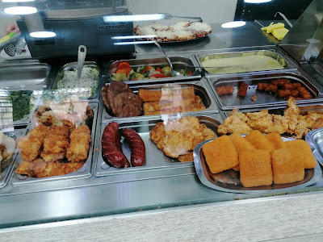
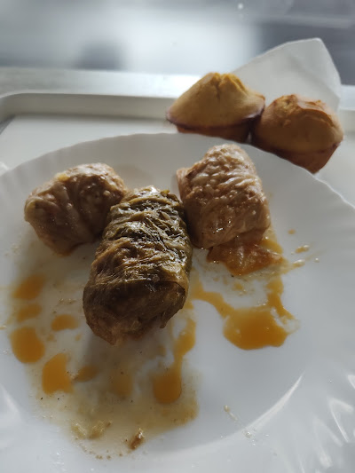
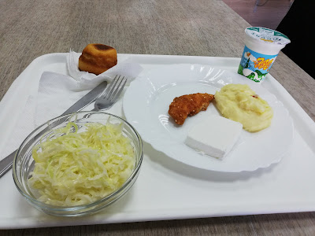
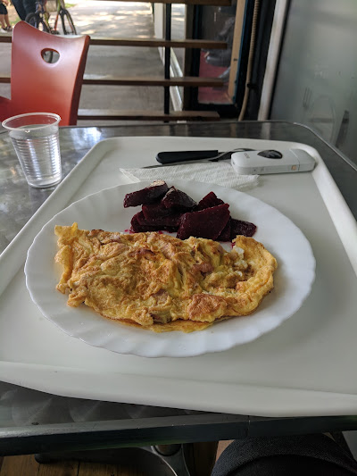
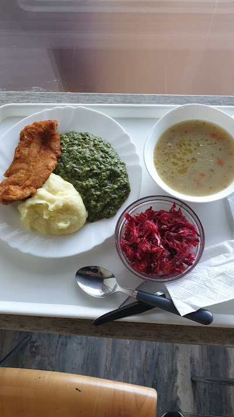
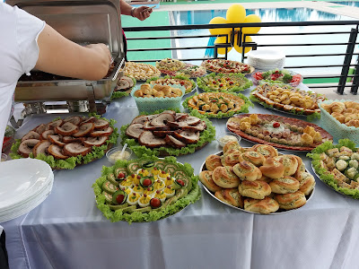
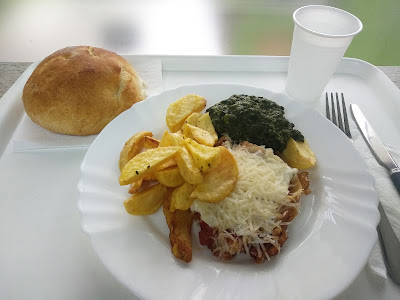
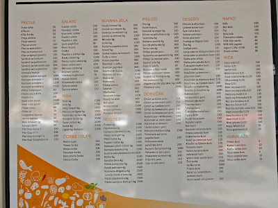

Domaća kuvana jela
Pasulj, gulaš, musaka, punjene paprike i druga jela po danu — pitajte osoblje za današnji meni.
Tel: 035 250 250 | E-pošta: expressrestoran@gmail.com

Jagodina · Maksima Gorkog 2
Brza kuvana jela, domaća kuhinja i kompletni obroci po pristupačnim cenama — za ručak, na pauzi ili za poneti.
Express u Jagodini je mesto gde tradicionalna domaća jela i brza usluga idu zajedno. Tu smo za zaposlene na pauzi, studente, penzionere, turiste i sve posetioce koji žele ukusan obrok bez dugog čekanja.
U ponudi su kuvana jela, specijaliteti od mesa, supe i čorbe, riba, salate, vegetarijanske opcije i slatki program. Nudimo obrok u lokalu, hranu za poneti, dostavu i ketering za firme i proslave.

Svakodnevno sveže pripremamo jela po kućnoj recepturi.
Pasulj, gulaš, musaka, punjene paprike i druga jela po danu — pitajte osoblje za današnji meni.

Specijaliteti od mesa i riblji obroci za one koji žele nešto „posebno“ tokom dana.

Osvežavajuće salate, prilozi i domaće poslastice — idealno uz glavno jelo ili uz kafu.
Za kompletan meni i dnevnu ponudu pozovite 035 250 250 ili nas posetite uživo.






„Ručak za pauzu — brzo, toplo i po meri. Često uzmem komplet i vratim se na posao bez čekanja.“
„Ponuda kao kod kuće. Ima sve od pasulja do salate, a koristili smo i ketering za kancelariju.“
„Lokacija pored centra, lako parkiranje u okolini. Kad žurim, poručim za poneti — uvek u roku.“
Ono što nas izdvaja u svakodnevnoj užurbanoj rutini — brzina, ukus i pouzdanost.
Obrok spreman za nekoliko minuta — za zaposlene i za one koji su u žurbi.
Kuvana jela, supe, specijaliteti i salate — širok izbor za različite ukuse.
Dostava za kancelarije i kućne adrese, kao i mogućnost da ponesete jelo sa sobom.
Organizujemo obroke za grupe, ručkove za firme i manje proslave — sve po dogovoru.
Adresa:
Maksima Gorkog 2, 35000 Jagodina, Srbija
(u centru grada, u blizini poznatih lokala i parkinga)
Telefon:
035 250 250
E-pošta:
expressrestoran@gmail.com
Radno vreme:
Svaki dan 08:00 – 20:00 — za praznike ili izmene pozovite nas.